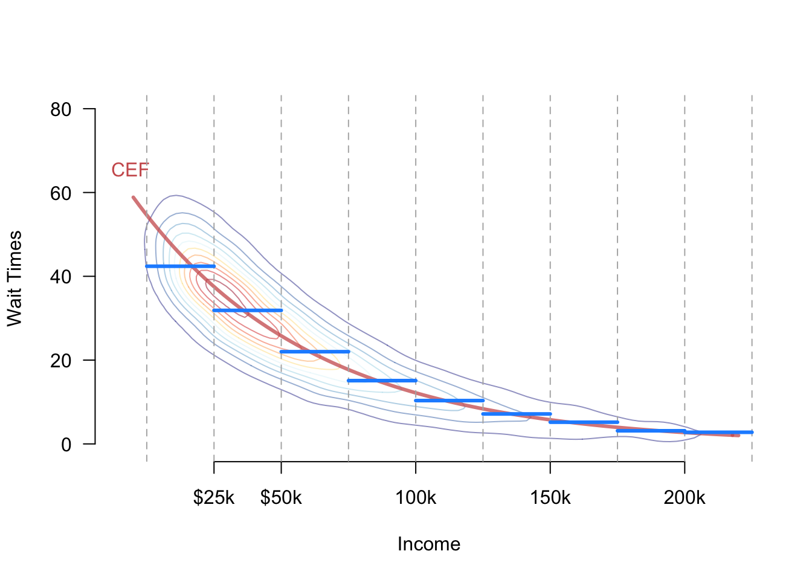

6 Linear regression
Regression refers to a collection of tools for assessing the relationship between a outcome variable, \(Y_i\), and a set of covariates, \(\X_i\). In particular, these tools focus on showing how the conditional mean of \(Y_i\) varies as a function \(\X_i\). For example, we may want to know how wait voting poll wait times vary as a function of some socioeconomic features of the precinct like income and racial composition. This is usually accomplished by estimating the regression function or conditional expectation function (CEF) of the outcome given the covariates, \[ \mu(\bfx) = \E[Y_i \mid \X_i = \bfx]. \] Why is estimation and inference for this regression function special? Why can’t we just use the approaches we have seen for the mean, variance, covariance, and so on? The basic problem with the CEF is that there may be many, many values \(\bfx\) that can occur and so many, many different conditional expectations that we will need to estimate. In fact, if any variable in \(\X_i\) is continuous, then there will be an infinite number of possible values of \(\bfx\) that we need to estimate. Because this problem gets worse as we add covariates to \(\X_i\), this is sometimes referred to as the curse of dimensionality. How can we resolve this with our measely finite data?
In this chapter, we are going to explore two different ways of “solving” the curse of dimensionality: assuming it away and changing the quantity of interest to something easier to estimate.
Regression is so ubiquitous in so many scientific fields that it has a lot of acquired notational baggage. In particular, the labels of the \(Y_i\) and \(\X_i\) varies greatly:
- The outcome can also be called: the response variable, the dependent variable, the labels (in machine learning), the left-hand side variable, or the regressand.
- The covariates are also called: the explanatory variables, the independent variables, the predictors, the regressors, inputs, or features.
6.1 Why do we need models?
At first glance, the connection between the CEF and parametric models might be hazy. For example, imagine we are interested in estimating the average poll wait times (\(Y_i\)) for Black voters (\(X_i = 1\)) versus non-Black voters (\(X_i=0\)). In that case, there are two parameters to estimate, \[ \mu(1) = \E[Y_i \mid X_i = 1] \quad \text{and}\quad \mu(0) = \E[Y_i \mid X_i = 0], \] which we could estimate by using the plug-in estimators that replace the population averages with their sample counterparts, \[ \widehat{\mu}(1) = \frac{\sum_{i=1}^{n} Y_{i}\mathbb{1}(X_{i} = 1)}{\sum_{i=1}^{n}\mathbb{1}(X_{i} = 1)} \qquad \widehat{\mu}(0) = \frac{\sum_{i=1}^{n} Y_{i}\mathbb{1}(X_{i} = 0)}{\sum_{i=1}^{n}\mathbb{1}(X_{i} = 0)}. \] These are just the sample averages of the wait times for Black and non-Black voters, respectively. And because the race variable here is discrete, this basically mimics the situation of estimating a single mean, just within subpopulations defined by race in this case. The same logic would apply if we had \(k\) racial categories: we would have \(k\) conditional expectations to estimate and \(k\) (conditional) sample means.
Now imagine that we want to know how the average poll wait time varies as a function of income, so that \(X_i\) is (essentially) continuous. Now we have a different conditional expectation for every possible dollar amount from 0 to Bill Gates’s income. Imagine we pick particular income, $42,238, and so we are interested in the conditional expectation \(\mu(42,238)= \E[Y_{i}\mid X_{i} = 42,238]\). We could use the same plug-in estimator in the discrete case, \[ \widehat{\mu}(42,238) = \frac{\sum_{i=1}^{n} Y_{i}\mathbb{1}(X_{i} = 42,238)}{\sum_{i=1}^{n}\mathbb{1}(X_{i} = 42,238)}. \] What is the problem with this estimator? In all likelihood there are 0 units in any particular dataset that have that exact income, meaning this estimator is undefined (we would be dividing by zero).
One solution to this problem is to use subclassification and turn the continuous variable into a discrete one and proceed with the discrete approach above. We might group incomes into $25,000 bins and then calculate the average wait times of anyone between, say, $25,000 and $50,000 income. When we make this estimator switch for pragmatic purposes, we need to connect it back to the DGP of interest somehow. We could assume that the CEF of interest only depends on these binned means, which would mean we have:
\[
\mu(x) =
\begin{cases}
\E[Y_{i} \mid 0 \leq X_{i} < 25,000] &\text{if } 0 \leq x < 25,000 \\
\E[Y_{i} \mid 25,000 \leq X_{i} < 50,000] &\text{if } 25,000 \leq x < 50,000\\
\E[Y_{i} \mid 50,000 \leq X_{i} < 100,000] &\text{if } 50,000 \leq x < 100,000\\
\vdots \\
\E[Y_{i} \mid 200,000 \leq X_{i}] &\text{if } 200,000 \leq x\\
\end{cases}
\] This assumes, perhaps incorrectly, that the average wait time does not vary within the bins. Figure 6.1 shows a hypothetical joint distribution between income and wait times with the true CEF, \(\mu(x)\) shown in red. The figure also shows the bins created by subclassification and the implied CEF if we assume bin-constant means in blue. We can see that blue function approximates the true CEF but deviates from it especially close to the bin edges. The trade off is that once we make the assumption, we only have to estimate one mean for every bin, rather than an infinite number of means for each possible income.
Similarly, we could assume that the CEF follows a simple functional form like a line, \[ \mu(x) = \E[Y_{i}\mid X_{i} = x] = \beta_{0} + \beta_{1} x. \] This reduces our infinite number of unknowns (the conditional mean at every possible income) to just two unknowns, the slope and intercept. As we will see, we can use the standard ordinary least squares to estimate these parameters. Notice again, though, that if the true CEF is nonlinear this assumption is incorrect, any estimate based off this assumption might be biased or even inconsistent.
We call the binning and linear assumptions on \(\mu(x)\) functional form assumptions because restrict the class of functions that \(\mu(x)\) can take. While powerful, these types of assumptions can muddy the roles of defining the quantity of interest and estimation. If our estimator \(\widehat{\mu}(x)\) performs poorly, it will be difficult to tell if this is because the estimator is flawed in some way or because our functional form assumptions are incorrect.
To help clarify these issues, we will pursue a different approach: understanding what linear regression can estimate well under minimal assumptions and then investigating how well this estimand approximates the true CEF.
6.2 Population linear regression
Let’s set aside the idea of the conditional expectation function and instead focus on finding the linear function of \(\X_i\) that best predicts the outcome. Remember that a linear function can be written \[ \bfx'\b = x_{1}\beta_{1} + x_{2}\beta_{2} + \cdots + X_{k}\beta_{k}. \] We will define the best linear predictor (BLP) to be \[ \bbL[Y_{i} \mid \X_{i}] =\X_{i}'\b, \quad \text{where}\quad \b = \argmin_{\mb{b} \in \real^k}\; \E\left[ \left( Y_{i} - \mb{X}_{i}'\b \right)^2 \right] \] The BLP function \(\bbL[Y \mid \X]\) is the linear function of the covariates that minimizes the mean squared prediction errors, where we are averaging over the joint distribution of the data. If we have a single covariate, this would be the population line of best fit. Again, this function is a feature of the joint distribution of the data—the DGP—and so represents something that we would like to learn about with our sample. It is an alternative to the CEF for summarizing the relationship between the outcome and the covariate, though we will see that they will sometimes be equal to each other.
Best linear projection assumptions
Without some assumptions on the joint distribution of the data, The following “regularity conditions” will ensure the existence of the BLP:
- \(\E[Y^2] < \infty\) (outcome has finite mean/variance)
- \(\E\Vert \mb{X} \Vert^2 < \infty\) (\(\mb{X}\) has finite means/variances/covariances)
- \(\mb{Q}_{\mb{XX}} = \E[\mb{XX}']\) is positive definite (columns of \(\X\) are linearly independent)
Under these assumption, it is possible to derive a closed-form expression for the population coefficients \(\b\) using matrix calculus. To set up the optimization problem, we will find the first order condition my taking the derivative of the expectation of the squared errors. First, let’s take derivative of the squared prediction errors using the chain rule: \[ \begin{aligned} \frac{\partial}{\partial \mb{b}^{'}}\left(Y_{i} - \X_{i}'\mb{b}\right)^{2} &= 2\left(Y_{i} - \X_{i}'\mb{b}\right)\frac{\partial}{\partial \mb{b}'}(Y_{i} - \X_{i}'\mb{b}) \\ &= -2\left(Y_{i} - \X_{i}'\mb{b}\right)\X_{i} \\ &= -2\left(\X_{i}Y_{i} - \X_{i}\X_{i}'\mb{b}\right) \end{aligned} \] We can now plug this into the expectation to get the first-order condition and solve for \(\b\), \[ \begin{aligned} 0 &= -2\E[\X_{i}Y_{i} - \X_{i}\X_{i}'\mb{b}] \\ \E[\X_{i}\X_{i}'] \b &= \E[\X_{i}Y_{i}], \end{aligned} \] which implies the population coefficients are \[ \b = \left(\E[\X_{i}\X_{i}']\right)^{-1}\E[\X_{i}Y_{i}] = \mb{Q}_{\mb{XX}}^{-1}\mb{Q}_{\mb{X}Y} \] We now have an expression for the coefficients for the population best linear predictor in terms of the joint distribution \((Y_{i}, \X_{i})\). There are a couple facts that might be useful for reasoning about this expression. Recall that \(\mb{Q}_{\mb{XX}} = \E[\X_{i}\X_{i}']\) is a \(k\times k\) matrix and \(\mb{Q}_{\X Y} = \E[\X_{i}Y_{i}]\) is a \(k\times 1\) column vector, which implies that \(\b\) is also a \(k \times 1\) column vector.
Note
Intuitively, what is happening in the expression for the population regression coefficients? It is helpful to separate out the intercept or constant term so that we have \[ Y_{i} = \beta_{0} + \X'\b + e_{i}, \] so \(\b\) refers to just the coefficients on each of the covariates. In this case, we can write the coefficients in more interpretable way: \[ \b = \V[\X]^{-1}\text{Cov}(\X, Y), \qquad \beta_0 = \mu_Y - \mb{\mu}'_{\mb{X}}\b \]
Thus, the population coefficients take the covariance between the outcome and the covariates and “divide” it by information about variances and covariances of the covariates. The intercept recenters the regression so that projection errors are mean zero.
With an expression for the population linear regression coefficients, we can write the linear projection as \[ \bbL[Y_{i} \mid \X_{i}] = \X_{i}'\left(\E[\X_{i}\X_{i}']\right)^{-1}\E[\X_{i}Y_{i}] = \X_{i}'\mb{Q}_{\mb{XX}}^{-1}\mb{Q}_{\mb{X}Y} \]
6.2.1 Projection error
The projection error is the difference between the actual value of \(Y_i\) and the projection, \[ e_{i} = Y_{i} - \bbL[Y_{i} \mid \X_{i}] = Y_i - \X_{i}'\b, \] where it is hopefully clear that we have made no assumptions about this error yet. It is simply the prediction error if we used the linear projection to predict the outcome. Rewriting this definition, we can see that we can always write the outcome as the linear projection plus the projection error, \[ Y_{i} = \X_{i}'\b + e_{i}. \] Notice that this looks suspiciously like we have made a linearity assumption on the CEF or on the relationship between the outcome and the covariates. But we haven’t, we have just used the definition of the projection error to write a statement that is tautological: \[ Y_{i} = \X_{i}'\b + e_{i} = \X_{i}'\b + Y_{i} - \X_{i}'\b = Y_{i}. \] The key difference between this representation and the usual linear model assumption is what properties \(e_{i}\) possesses.
One key property of the projection errors is that when the covariate vector includes an “intercept” or constant term, the projection errors are uncorrelated with the covariates. To see this, we first note that \(\E[\X_{i}e_{i}] = 0\) since \[ \begin{aligned} \E[\X_{i}e_{i}] &= \E[\X_{{i}}(Y_{i} - \X_{i}'\b)] \\ &= \E[\X_{i}Y_{i}] - \E[\X_{i}\X_{i}']\b \\ &= \E[\X_{i}Y_{i}] - \E[\X_{i}\X_{i}']\left(\E[\X_{i}\X_{i}']\right)^{-1}\E[\X_{i}Y_{i}] \\ &= \E[\X_{i}Y_{i}] - \E[\X_{i}Y_{i}] = 0 \end{aligned} \] Thus, for every \(X_{ij}\) in \(\X_{i}\), we have \(\E[X_{ij}e_{i}] =0\). If one of the entries in \(\X_i\) is a constant 1, then this also implies that \(\E[e_{i}] =0\). Together, these facts imply that the projection error is uncorrelated with each \(X_{ij}\), since \[ \cov(X_{ij}, e_{i}) = \E[X_{ij}e_{i}] - \E[X_{ij}]\E[e_{i}] = 0 - 0 = 0 \] Notice that we still have made no assumptions about these projection errors except some mild regularity conditions on the joint distribution of the outcome and covariates. Thus, in very general settings, we can write the linear projection model \(Y_i = \X_i'\b + e_i\) where \(\b = \left(\E[\X_{i}\X_{i}']\right)^{-1}\E[\X_{i}Y_{i}]\) and conclude that \(\E[\X_{i}e_{i}] = 0\) by definition not by assumption.
The projection error is uncorrelated with the covariates, so does this mean that the CEF is linear? Unfortunately, no because recall that while independence implies uncorrelated, the reverse does not hold. So when we look at the CEF, we have \[ \E[Y_{i} \mid \X_{i}] = \X_{i}'\b + \E[e_{i} \mid \X_{i}], \] and the last term \(\E[e_{i} \mid \X_{i}]\) would only be 0 if the errors were independent of the covariates so \(\E[e_{i} \mid \X_{i}] = \E[e_{i}] = 0\). But nowhere in the linear projection model did we assume this. So while we can (almost) always write the outcome as \(Y_i = \X_i'\b + e_i\) and have those projections error be uncorrelated with the covariates, it will require additional assumptions to ensure that the true CEF is in fact linear \(\E[Y_{i} \mid \X_{i}] = \X_{i}'\b\).
Let’s take a step back. What have we shown here? In a nutshell, we have shown that under very general conditions, a population linear regression exists and we can write the coefficients of that population linear regression as a function of expectations of the joint distribution of the data. Why do we care about this? It turns out that the ordinary least squares estimator, the workhorse regression estimator, targets this quantity of interest in large samples, regardless of whether the true CEF is linear or not. This means that even when a linear CEF assumption is incorrect, OLS still targets a perfectly valid quantity of interest: the coefficients from this population linear projection.
6.3 Linear CEFs without assumptions
What is the relationship between the best linear predictor (which we just saw exists very generally) and the CEF? To draw the connection, remember a key property of the conditional expectation: it is the function of \(\X_i\) that best predicts \(Y_{i}\). The population regression was the best linear predictor, but the CEF is the best predictor among all functions of \(\X_{i}\), linear or nonlinear, that are nicely behaved. In particular, if we label \(L_2\) be the set of all functions of the covariates \(g()\) such that they are finite squared expectation, \(\E[g(\X_{i})^{2}] < \infty\), then we can show that the CEF has the lowest squared prediction error in this class of functions: \[ \mu(\X) = \E[Y_{i} \mid \X_{i}] = \argmin_{g(\X_i) \in L_2}\; \E\left[(Y_{i} - f(\X_{i}))^{2}\right], \]
So we have established that the CEF is the best predictor and the population linear regression \(\bbL[Y_{i}\mid \X_{i}]\) is the best linear predictor. These two facts allow us to connect the CEF and the population regression.
Theorem 6.1 If \(\mu(\X_{i})\) is a linear function of \(\X_i\), then \(\mu(\X_{i}) = \bbL[Y_{i}\mid \X_{i}] = \X_i'\b\).
This theorem says that if the true CEF is linear, then it is equal to the population regression. The proof of this is straightforward: the CEF is the best predictor, so if it is linear, it must also be the best linear predictor.
In general, we are usually in the business of learning about the CEF so we are unlikely to know if it truly is linear or not. In some situations, however, we can show that the CEF is linear without any additional assumptions. These will be situations when the covariates take on a finite number of possible values. Suppose that we are interested in the CEF of poll wait times for Black (\(X_i = 1\)) vs non-Black (\(X_i = 0\)) voters. In this case, there are two possible values of the CEF, \(\mu(1) = \E[Y_{i}\mid X_{i}= 1]\), the average wait time for Black voters, and \(\mu(0) = \E[Y_{i}\mid X_{i} = 0]\), the average wait time for non-Black voters. Notice that we can write the CEF as \[ \mu(x) = x \mu(1) + (1 - x) \mu(0) = \mu(0) + x\left(\mu(1) - \mu(0)\right)= \beta_0 + x\beta_1, \] which is clearly a linear function of \(x\). Based on this derivation, we can see that the coefficients of this linear CEF have a clear interpretation:
- \(\beta_0 = \mu(0)\): the expected wait time for a Black voter.
- \(\beta_1 = \mu(1) - \mu(0)\): the difference in average wait times between Black and non-Black voters. Notice that it matters how \(X_{i}\) is defined here since the intercept will always be the average outcome when \(X_i = 0\) and the slope will always be the difference in means between the \(X_i = 1\) group and the \(X_i = 0\) group.
What about a categorical coviarate with more than two levels? For instance, we might be interested in wait times by party identification, where \(X_i = 1\) indicates Democratic voters, \(X_i = 2\) indicates Republican voters, and \(X_i = 3\) indicates independent voters. How can we possible write the CEF of wait times as a linear function of this variable? That would assume that the difference between Democrats and Republicans is the same as for Independents and Republicans. With more than two levels, a categorical variable is better represented as a vector of binary variables, \(\X_i = (X_{i1}, X_{i2})\), where \[ \begin{aligned} X_{{i1}} &= \begin{cases} 1&\text{if Republican} \\ 0 & \text{if not Republican} \end{cases} \\ X_{{i2}} &= \begin{cases} 1&\text{if independent} \\ 0 & \text{if not independent} \end{cases} \\ \end{aligned} \] Clearly, these two indicator variables encode the same information as the original three-level variable, \(X_{i}\). If I know the values of \(X_{i1}\) and \(X_{i2}\), I know exactly what party to which \(i\) belongs. Thus, the CEFs with repect to \(X_i\) and the pair of indicator variables, \(\X_i\), is exactly the same, but the latter admits a very nice linear representation, \[ \E[Y_i \mid X_{i1}, X_{i2}] = \beta_0 + \beta_1 X_{i1} + \beta_2 X_{i2}, \] where
- \(\beta_0 = \E[Y_{i} \mid X_{i1} = 0, X_{i2} = 0]\) is the average wait time for the group who does not get an indicator variable (Democrats in this case).
- \(\beta_1 = \E[Y_{i} \mid X_{i1} = 1, X_{i2} = 0] - \E[Y_{i} \mid X_{i1} = 0, X_{i2} = 0]\) is the difference in means between Republican voters and Democratic voters, or the difference between the first indicator group and the baseline group.
- \(\beta_2 = \E[Y_{i} \mid X_{i1} = 0, X_{i2} = 1] - \E[Y_{i} \mid X_{i1} = 0, X_{i2} = 0]\) is the difference in means between independent voters and Democratic voters, or the difference between the second indicator group and the baseline group.
This approach generalizes easily to categorical variables with an arbitrary number of levels.
What have we shown? The CEF will be linear without additional assumptions when there is a categorical covariate. We can show that this continues to hold even when we have multiple categorical variables. Suppose now that we have two binary covariates: \(X_{i1}=1\) indicating a Black voter and \(X_{i2} = 1\) indicating an urban voter. With these two binary variables, there are 4 possible values of the CEF: \[ \mu(x_1, x_2) = \begin{cases} \mu_{00} & \text{if } x_1 = 0 \text{ and } x_2 = 0 \text{ (non-Black, rural)} \\ \mu_{10} & \text{if } x_1 = 1 \text{ and } x_2 = 0 \text{ (Black, rural)}\\ \mu_{01} & \text{if } x_1 = 0 \text{ and } x_2 = 1 \text{ (non-Black, urban)}\\ \mu_{11} & \text{if } x_1 = 1 \text{ and } x_2 = 1 \text{ (Black, urban)} \end{cases} \] We can write this as \[ \mu(x_{1}, x_{2}) = (1 - x_{1})(1 - x_{2})\mu_{00} + x_{1}(1 -x_{2})\mu_{10} + (1-x_{1})x_{2}\mu_{01} + x_{1}x_{2}\mu_{11}, \] which we can rewrite as \[ \mu(x_1, x_2) = \beta_0 + x_1\beta_1 + x_2\beta_2 + x_1x_2\beta_3, \] where
- \(\beta_0 = \mu_{00}\): average wait times for rural non-Black voters.
- \(\beta_1 = \mu_{10} - \mu_{00}\): difference in means for rural Black vs rural non-Black voters..
- \(\beta_2 = \mu_{01} - \mu_{00}\): difference in means for urban non-Black vs rural non-Black voters.
- \(\beta_3 = (\mu_{11} - \mu_{01}) - (\mu_{10} - \mu_{00})\): difference in urban racial difference vs rural racial difference.
Thus, we can write the CEF with two binary covriataes as linear when the linear specification includes and multiplicative interaction between them (\(x_1x_2\)). This holds for all pairs of binary covariates and we can generalize the interpretation of the coefficients in the CEF as
- \(\beta_0 = \mu_{00}\): average outcome when both variables are 0.
- \(\beta_1 = \mu_{10} - \mu_{00}\): difference in average outcomes for the first covariate when second covariate is 0.
- \(\beta_2 = \mu_{01} - \mu_{00}\): difference in average outcomes for the second covariate when the first covariate is 0.
- \(\beta_3 = (\mu_{11} - \mu_{01}) - (\mu_{10} - \mu_{00})\): change in the “effect” of the first (second) covariate when the second (first) covariate goes from 0 to 1.
This result also generalizes to an arbitrary number of binary covariates. If we have \(p\) binary covariates, then the CEF will be linear with all two-way interactions, \(x_1x_2\), all three-way interactions, \(x_1x_2x_3\), up to the \(p\)-way interaction \(x_1\times\cdots\times x_p\). Furthermore, we can generalize to arbitrary numbers of categorical variables by expanding each categorical variable into a series of binary variables and then including all interactions between the resulting binary variables.
We have established that when we have a set of categorical covariates, the true CEF will be linear and we have seen the various ways to represent that CEF. Notice that when we actually use, for example, ordinary least squares, we are free to choose how to include our variables. That means that we could run a regression of \(Y_i\) on \(X_{i1}\) and \(X_{i2}\) without an interaction term. This model will only be correct if \(\beta_3\) is actually equal to 0 and so the interaction term is irrelevant. Because of this ability to choose our models, it’s helpful to have a language for models that capture the linear CEF appropriately. We call a model saturated if there as many coefficients as there are unique values of the CEF. A saturated model by its nature can always be written as a linear function without assumptions. The above examples show how to construct saturated models in various situations.
6.4 Partitioned regression
When we have a regression with two groups of covariates, \(\mb{V}_{i} = (\X_{i}, \mb{Z}_{i})\), we might want a formula for the coefficients on just \(\X_i\). Given the matrix algebra involved in the definition of the population regression coefficients, it isn’t clear how we might acheive this. It turns out we can obtain a formula for those coefficients from a set of two population regressions.
In particular, let \(\mb{\delta}' = (\b', \gamma')\) be the coefficients the coefficients on the complete set of covariates, with \(\b\) corresponding to \(\X_i\) and \(\mb{\gamma}\) corresponding to \(\mb{Z}_i\). In other words, the linear projection in this case can be written as \[
\bbL(Y_{i} \mid \mb{V}_{i})= \mb{V}_{i}'\mb{\delta} = \X_{i}'\b + \mb{Z}_{i}'\mb{\gamma}.
\] To obtain an expression for \(\b\), we can first think of a population regression of the covariates of interest \(\X_i\) on the other covariates \(\mb{Z}_i\), \(\bbL(\X_{i} \mid \mb{Z}_{i})\). This looks somewhat odd because we have a vector as the dependent variable, but it represents the idea of running a separate regression of each variable in \(\X_i\) on \(\mb{Z}_i\). So we end up with a matrix of coefficients instead of a vector (one column for each variable in \(\X_i\)), even though the expression for the linear projection does not change much: \[
\bbL(\X_{i} \mid \mb{Z}_{i}) = \mb{Z}_{i}'\left(\E[\mb{Z}_{i}\mb{Z}_{i}']\right)^{{-1}} \E[\mb{Z}_{i}'\X_{i}].
\] These represent the best linear guess about the covariates of interest given the other covariates. Let’s define the prediction errors \(\widetilde{\X}_i = \X_i - \bbL(\X_{i} \mid \mb{Z}_{i})\). Because these are linear projection errors, we know from the above results that they are uncorrelated with \(\mb{Z}_i\), which geometrically means they are orthogonal to those covariates. Thus, we sometimes call the transformation \(A - \bbL(A \mid B)\) orthogonalizing \(A\) with respect to \(B\). The vector \(\widetilde{X}_i\) captures the variation in \(\X_i\) that is not capture by a linear function of \(\mb{Z}_i\). An amazing property of these errors is that when we project \(Y_i\) onto just \(\widetilde{\X}_i\), we obtain the coefficients on \(\X_i\) from the projection of \(Y_i\) on both \(\X_i\) and \(\mb{Z}_i\): \[
\b = \left( \E[\widetilde{\X}_{i}\widetilde{\X}_{i}'] \right)^{-1}\E[\widetilde{\X}_{i}'Y_{i}].
\] The same result applies if we orthogonalize \(Y_i\) with respect to \(\mb{Z}_i\) as well,
\[
\b = \left( \E[\widetilde{\X}_{i}\widetilde{\X}_{i}'] \right)^{-1}\E[\widetilde{\X}_{i}'\widetilde{Y}_{i}],
\] where \(\widetilde{Y}_i = Y_i - \bbL(Y_{i} \mid \mb{Z}_{i})\).
Why do care about this ability to partition the regression coefficients? One reason is that it allows us to derive an interpretable expression for each coefficient in the BLP. Let’s change our partition slightly so that \(\X_i = (X_{{ik}}, \X_{i,-k})\), where \(\X_{i,-k}\) is the vector of covariates omitting the \(k\)th entry (we assume that \(\X_{i,-k}\) includes the constant term 1). Based on the above, we can define \(\widetilde{X}_{ik} = X_{ik} - \bbL(X_{ik}\mid \X_{i,-k})\) as the \(k\)th variable othorgonalized with respect to rest of the variables. Then the above partition results implies that \[ \beta_k = \frac{\cov(Y_i, \widetilde{X}_{ik})}{\V[\widetilde{X}_{ik}]}. \] Thus, the population regression coefficient in the BLP is the covariance of the outcome and the orthogonalized variable divided by the variance of the orthogonalized value. More generally, this implies that we could use a scatterplot of the outcome and the orthogonalized covariate to explore the conditional relationship between these two variable in a more flexible or exploratory manner.
6.5 Omitted variable bias
In many situations, we might need to choose to include a variable in a regression or not, so it can be helpful to understand how this choice might affect the population coefficients on the other variables in a the regression. In particular, suppose we are considering whether to include some variable \(Z_i\) in our regression where \(\X_i\) represents the other covariates. Then we are deciding between the two projections \[ \bbL[Y_i \mid \X_i, Z_i] = \X_i'\b + Z_i\gamma, \qquad \bbL[Y \mid \X] = \X_i'\mb{\delta}, \] where we often refer to \(\bbL[Y_i \mid \X_i, Z_i]\) as the long regression and \(\bbL[Y_i \mid \X_i]\) as the short regression.
Can we relate the coefficients on \(\X_i\) from these two regressions? It turns out that we can using two property that linear projections share with conditional expectations: the law of iterated projections, \[ \bbL[Y_i \mid \X_i] = \bbL\left\{ \bbL[Y_i \mid \X_i, Z_i] \mid \X_i \right\}, \] and that linear projection is linear, so that \(\bbL[A + B \mid C] = \bbL[A\mid C] + \bbL[B \mid C]\). Together, these imply \[ \begin{aligned} \bbL[Y_i \mid \X_i] &= \bbL[\X_i'\b + Z_i\gamma \mid \X_i] \\ &= \bbL[\X_i\mid \X_i]'\b + \bbL[Z_i \mid \X_i]\gamma \\ &= \X'_i\b + \bbL[Z_i \mid \X_i]\gamma \end{aligned} \] We can write the regression/projection of \(Z_i\) on \(\X_i\) as \(\bbL[Z_i \mid \X_i]= \X_i'\mb{\pi}\) and so \[ \bbL[Y_i \mid \X_i] = \X_i'(\b + \mb{\pi}\gamma), \] which implies that the short coefficients can be written as \(\mb{\delta} = \b + \mb{\pi}\gamma\).
We can easily rewrite this to show that the difference between the coefficients in these two projections is \(\mb{\delta} - \b= \mb{\pi}\gamma\) or the product of the coefficient on the “excluded” \(Z_i\) and the coefficient of the included \(\X_i\) on the excluded. This difference is usually referred to as the omitted variable bias of omitting \(Z_i\) under the idea that \(\b\) is the true target of inference. But the result is much broader than this since it just tells us how to relate the coefficients of two nested projection.